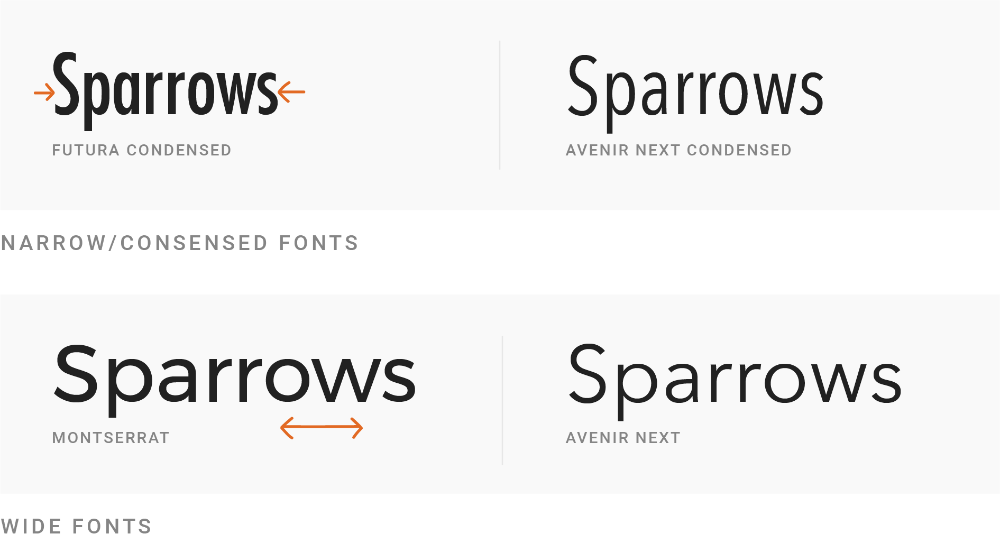
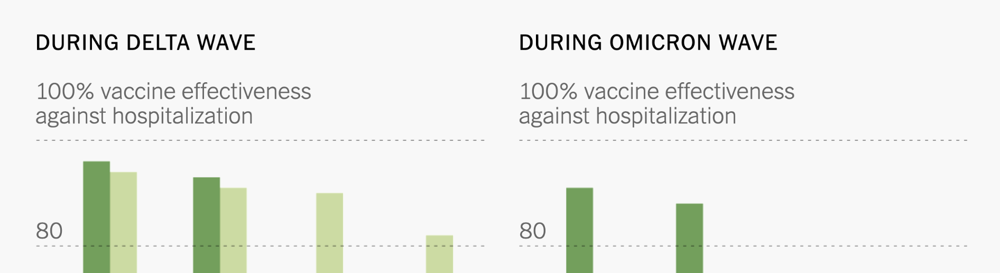
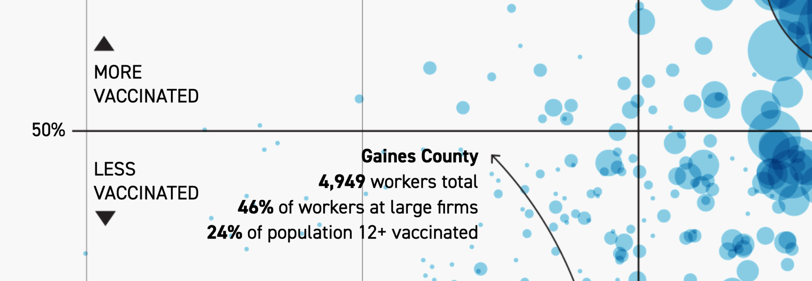
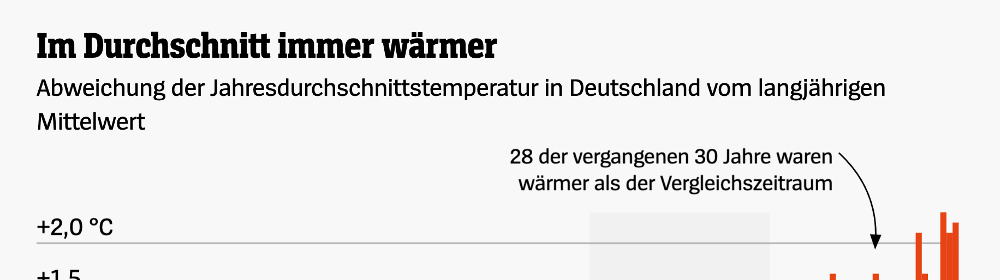

Economic Policy Visualization
Growth · Labels
November 11, 2024
Growth in economic policy
In recent years economic growth has come to occupy an exalted position in the hierarchy of goals of government policy […] At least in professional economic discussion, we need to give a definite and distinctive meaning to growth as a policy objective. Let it be neither a new synonym for good things in general nor a fashionable way to describe other economic objectives. Let growth be something it is possible to oppose as well as to favor, depending on judgments of social priorities and opportunities.
James Tobin (1964)
The macroeconomics of distribution
Wages, employment, and growth
Two questions in Post-Keynesian economics:
- Which effect do real wage increases have on employment?
- Which effect does a shift in the functional distribution have on growth?
Wage increase and employment
Neoclassical model of the labour market:
- Price (real wage) brings supply and demand into equilibrium
- LM = one market among many
- Effect of real wage increase on employment is negative
- Why? Wages are costs
Post-Keynesians:
- Labour market is downstream of production
- Production is determined by effective demand
- Effect of real wage increase on employment is positive
- Why? Wages are demand
Post-Keynesian growth models
4 generations of PK growth models:
- Keynes, Kalecki
- Robinson, Kaldor
- Bhaduri, Marglin, Dutt, Taylor
- Hein, Onaran, Stockhammer
| Full employment | Unemployment | |
|---|---|---|
| Full capacity utilization | Kaldor (v.1) | Robinson |
| Excess capacity | - | Kalecki |
The wage-led/profit-led debate
General framework
- Post-Keynesian growth model: Investment and savings function depend on distribution (neither savings nor technological progress determine growth)
- Aggregate output equals wages and profits (\(r\) = profit rate) \[ pX = wN + prK \]
- \(\delta\) is the wage share and \(\pi\) is the profit share \[ \delta = \frac{wN}{pX} \\ \pi = \frac{prK}{pX} = \frac{rK}{X} \]
Determination of profit rate
Let \(X_{fe}\) be potential output, \(l\) is labour/output ratio, \(v\) is capital/output ratio (= technology, assumed constant: \(v=1\)) and \(u\) is capacity utilization \[ l=\frac{N}{X};\quad v=\frac{K}{X_{fe}}=1;\quad u=\frac{X}{X_{fe}};\quad \frac{K}{X} = \frac{v}{u} = u^{-1} \] \[ p=w\frac{N}{X} + rp \frac{K}{X};\quad p = wl + rpu^{−1} \] \[ \pi = \frac{rK}{X} = \frac{r}{u} \rightarrow r= \pi u \]
Profit rate \(r\) depends on profit share \(\pi\) and capacity utilization \(u\)
Recall partial derivatives
\[ y = \frac{u(x)}{v(x)} \]
\[ y' = \frac{u'(x) \cdot v(x) - v'(x) \cdot u(x)}{v^2(x)} \]
First generation: Kaldor-Robinson
- Assumption: Workers do not save, full capacity utilization (\(u=1\))
- Growth rate of investments consists of growth of autonomous investments \(g_0\) and the elasticity to the profit rate \(\alpha r\) \[ g_I = g_0 + \alpha r \]
- Savings come only out of profits (Cambridge equation: Pasinetti, 1962) with \(s\) as saving propensity of capitalists \[ g_S = sr \]
- In equilibrium \(g_S = g_I\) and thus \[ sr = g_0 + \alpha r \\ r^∗= \frac{g_0}{(s − \alpha)} \]
- How does the profit rate react to saving? \[ \frac{\partial r^*}{\partial s} = − \frac{g_0}{(s−\alpha)^2} <0 \]
- The equilibrium growth rate with \(r^*\) is \[ g^∗ = g_0 + \alpha r^* = g_0 + \alpha \frac{g_0}{s− \alpha} = \frac{sg_0}{s−\alpha} \]
- How does the growth rate react to saving? \[ \frac{\partial g^*}{\partial s} = \frac{g_0(s−\alpha)−sg_0}{(s−\alpha)^2} = −\frac{\alpha g_0}{(s−\alpha)^2} <0 \]
- Higher propensity to save reduces growth and profitability due to lower aggregate demand.
Second generation: Neo-Kaleckians
- Capacity utilization now endogenous (relax assumption of \(u=1\)); a high capacity utilization leads firms to invest more to satisfy expected demand \[ g_I = g_0 + \alpha r + \beta u \]
- In equilibrium \(g_I = g_S = sr\) and since \(r = u \pi\) \[ su\pi = g_0 + \alpha u \pi + \beta u \\ u^* = \frac{g_0}{\pi(s−\alpha)−\beta} \\ \frac{\partial u^*}{\partial \pi} = −\frac{(s-\alpha)g_0}{\left[ \pi (s−\alpha)− \beta\right]^2} <0 \]
- A rising profit share reduces aggregate demand (lower consumption propensity of capitalists; workers don’t save) and thus capacity utilization
- The profit rate falls with rising profit share: \[ r^* = \pi u^* = \frac{\pi g_0}{\pi (s−\alpha)−\beta} \\ \frac{\partial r^*}{\partial \pi} = −\frac{g_0}{[\pi (s−\alpha)−\beta]^2} <0 \]
- The growth rate also reacts negatively to a rising profit share \[ g^* = g_0 + \alpha r^* + \beta u^* = \frac{g_0 \pi s}{\pi (s−\alpha)−\beta} \\ \frac{\partial g^*}{\partial \pi} = −\frac{g_0 s \beta}{[\pi (s−\alpha)−\beta]^2} <0 \]
Third generation: Bhaduri-Marglin
- Focus on the profit share \(\pi\) instead of the profit rate \(r\) in the investment function \[ g_I = g_0 + \alpha \pi + \beta u \]
- Capacity utilization reacts negatively to a rising profit share \[ s \pi u = g_0 + \alpha \pi + \beta u \\ u^* = \frac{g_0 + \alpha \pi}{s\pi - \beta} \\ \frac{\partial u^*}{\partial \pi} = −\frac{sg_0 + \alpha\beta}{(s\pi - \beta)^2} <0 \]
- Change in the profit rate is now ambiguous \[ r^* = \pi u^* = \frac{\pi(g_0 + \alpha\pi)}{s\pi - \beta} \\ \frac{\partial r^*}{\partial \pi} = \frac{\alpha\pi - u^* \beta}{s\pi − \beta} < \mathtt{or} >0 \]
- Same for the growth rate \[ g^* = g_0 + \alpha\pi + \beta u^* = \frac{s\pi(g_0 + \alpha\pi)}{s\pi - \beta} \\ \frac{\partial g^*}{\partial \pi} = \frac{s(\alpha\pi - \beta u^*)}{s\pi - \beta} < \mathtt{or} > 0 \]
- There are now two cases: \[ \frac{\partial g^*}{\partial \pi} = \begin{cases} >0: \alpha\pi > \beta u^* & \mathtt{profit−led} \\ <0: \alpha\pi < \beta u^* & \mathtt{wage-led} \end{cases} \]
Wage-led/profit-led debate
- Seminal theoretical paper: Bhaduri/Marglin (1990)
- Wage-led vs. profit-led: When income is redistributed towards labour, does investment react more strongly to higher demand or to the lower profitability?
- First empirical estimate: Bowles/Boyer (1995)
- Taken up by Post-Keynesians
- in Europe (Hein, Onaran, Stockhammer, etc.): Neo-Kaleckians, wage-led
- and in the US (Taylor, etc.): Neo-Goodwinians, profit-led
The empirical assessment
Components of demand
\[ Y = C + I + NX \]
What is the reaction of each component when income is redistributed towards labour?
- Consumption \(C\): rises
- Investments \(I\): depends on firm‘s reaction to higher demand vs. lower profit rate
- Net exports \(NX\): imports rise, exports fall \(\rightarrow NX\) fall
It’s an empirical question
| Wage share ↑ | Consumption | Investment | Net exports | Dom. demand | Total demand |
|---|---|---|---|---|---|
| 🇪🇺 | ↑ | ↓ | ↓ | ↑ | ↑ |
| 🇩🇪 | ↑ | ↓ | ↓ | ↑ | ↑ |
| 🇫🇷 | ↑ | ↓ | ↓ | ↑ | ↑ |
| 🇮🇹 | ↑ | ↓ | ↓ | ↑ | ↑ |
| 🇬🇧 | ↑ | ↓ | ↓ | ↑ | ↑ |
| 🇺🇸 | ↑ | ↓ | ↓ | ↑ | ↑ |
| 🇯🇵 | ↑ | ↓ | ↓ | ↑ | ↑ |
| 🇨🇦 | ↑ | ↓ | ↓ | ↑ | ↓ |
| 🇦🇺 | ↑ | ↓ | ↓ | ↑ | ↓ |
| 🇲🇽 | ↑ | ↓ | ↓ | ↑ | ↓ |
| 🇦🇷 | ↑ | ↓ | ↓ | ↑ | ↓ |
| 🇨🇳 | ↑ | ↓ | ↓ | ↑ | ↓ |
| 🇮🇳 | ↑ | ↓ | ↓ | ↑ | ↓ |
| 🇿🇦 | ↑ | ↓ | ↓ | ↑ | ↓ |
Meta-Regression analysis
In a new article (Dammerer et al., 2024), we study
- 578 estimates for the relationship between functional distribution and aggregate demand
- from 33 empirical studies
- over 163 years and 59 countries and regions
- whereof 218 estimates refer to total demand and 360 to domestic demand
We find that
- Total demand (\(C+I+NX\)) is profit-led on average
- Domestic demand (\(C+I\)) is wage-led
- Publication bias is present. If corrected, total demand is less profit-led
Histogram of estimates
Funnel plot for total demand
Funnel plot for domestic demand
Labels and Fonts
Serif and sans-serif fonts

Sans-serif fonts are better for reading charts

Use a font with lining and tabular numbers


Use bold fonts only for emphasis

But don’t use too thin font, either

Choose an adequate size for your annotations

Use uppercase fonts wisely

There are condensed and wide fonts

Don’t be too narrow, but too wide neither

Some examples






Bibliography

PI 0750 Economic Policy (Applied track) | Winter term 2024